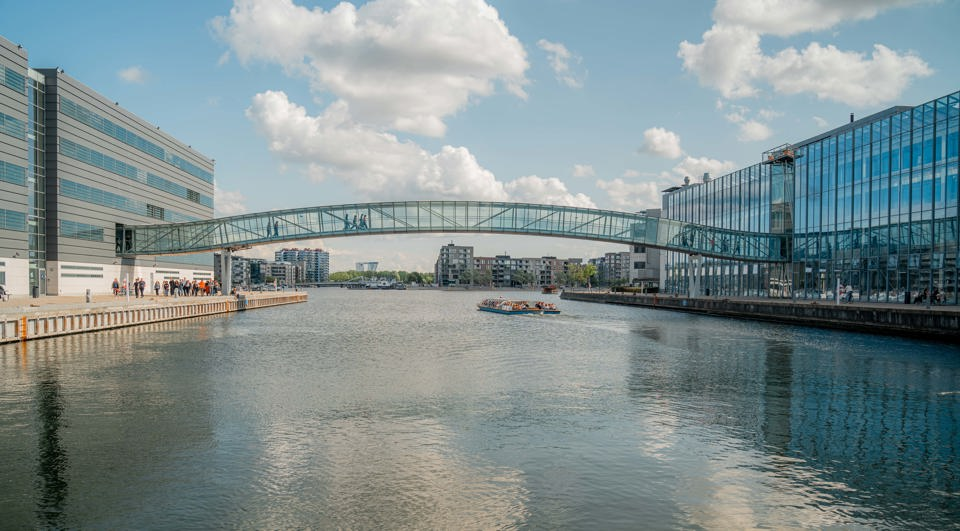

Velkommen til vores e-portfolio, hvor vi præsenterer faglige projekter fra studiet. Her ser du eksempler på design, kode og samarbejde.
Vi arbejder med webudvikling, brugeroplevelse og digital formidling. Hvert projekt afspejler vores fokus på funktion, visuel klarhed og god struktur.
Vores team bruger både kreativ tænkning og teknisk viden for at skabe løsninger, der er nemme at forstå og lette at bruge.

Et billede fra Aalborg Universitet, hvor vores læring og projekter opstår.
Projekter
Vores projekter inkluderer udvikling af hjemmesider, digitale koncepter og visuelle prototyper.
Vi arbejder med opgaver, hvor brugerens oplevelse er i centrum, og hvor designet skal understøtte det faglige indhold klart og professionelt.
- Webdesign: Brugerfokuserede, responsive løsninger.
- UI/UX: Tydelig navigation og læsevenlige layouts.
- Projektledelse: God planlægning, samarbejde og aflevering.
Erfaringer og læring
Gennem vores studie har vi opbygget erfaring med HTML, CSS, JavaScript og Python samt med værktøjer som Git og VS Code.
Vi lærer at arbejde struktureret, løse problemer og udvikle løsninger, der fungerer både teknisk og visuelt.

Illustration af innovation og samarbejde i vores studieprojekter.
Fremtidsudsigter
Vi arbejder målrettet på at udvikle vores kompetencer inden for nye teknologier som AI, machine learning og cloud services.
Vores mål er at kunne bidrage til spændende projekter og fortsætte læringen i et professionelt miljø.
Vi ønsker at blive stærke digitale fagfolk, der kan levere både gode idéer og solide tekniske løsninger.